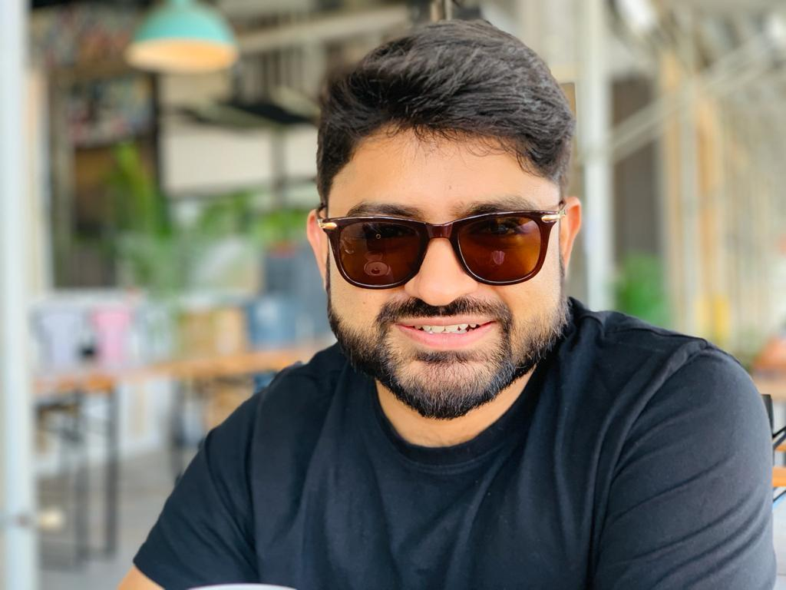

A 101, not a deep dive

Allo Health
India's Largest Chain of Sexual & Mental Health Clinics
Building AI as leverage
Not a chatbot.
What the potential really looks like, the high-level path to get there, and the first step you can take.
Gaurav GuptaCTO & CMO · Allo Health
[ host · date ]

Speaker
Gaurav Gupta
CTO & CMO · Allo Health
Fifteen years a builder: engineer, founder, operator.
- IIT, Computer Science
- Engineer at IBM & Amazon
- Founding engineer & CTO, YC W12
- Today: CTO & CMO, builds the tech and runs the growth